Performance Comparison
Comprehensive comparison with existing methods

Performance comparison: MMTok results across multiple models and datasets
Multimodal Coverage Maximization for Efficient Inference of VLMs
🚀 Accepted to ICLR 2026 • Intelligent Vision Token Pruning for VLM Acceleration
Vision-Language Models (VLMs) demonstrate impressive performance in understanding visual content with language instruction by converting visual input to vision tokens. However, redundancy in vision tokens results in the degenerated inference efficiency of VLMs. While many algorithms are proposed to reduce the number of vision tokens, most of them apply only uni-modal information (i.e., vision/text) for pruning and ignore the inherent multimodal property of vision-language tasks. To address this limitation, we propose to leverage both vision and text tokens to select informative vision tokens. We first formulate the subset selection problem as a coverage maximum problem. Afterward, a subset of vision tokens is optimized to cover the text tokens and the original set of vision tokens, simultaneously. Under the maximal coverage criterion on the POPE dataset, our method achieves a 1.87× speedup while maintaining 98.7% of the original performance on LLaVA-Next-13B. Furthermore, with only four vision tokens, it still preserves 87.7% of the original performance on LLaVA-1.5-7B.
What makes MMTok unique among vision token pruning methods
MMTok shifts the pruning paradigm from independent ranking to Collective Coverage Maximization. We formulate token selection as a submodular maximization problem with an approximation guarantee, ensuring each selected token contributes maximal marginal gain to the overall information space.
Unlike prior uni-modal methods, MMTok jointly optimizes text–vision and vision–vision coverage matrices. This dual-modality awareness ensures that selected tokens are both semantically aligned with the query and visually representative of the entire scene.
MMTok is a training-free framework that requires no fine-tuning and no modification to the LLM’s internal structure. With linear-time complexity O(nk), it adds only 0.8–6.4 ms latency in real-time inference across typical token budgets.
Significant acceleration across multiple benchmark datasets
LLaVA-Next-13B on H100 GPU (higher on other GPUs)
At highest prune ratio on LLaVA-1.5 & Next (7B & 13B)
4 tokens on POPE, LLaVA-1.5-7B
Vision tokens are highly redundant, creating a bottleneck for VLM inference efficiency
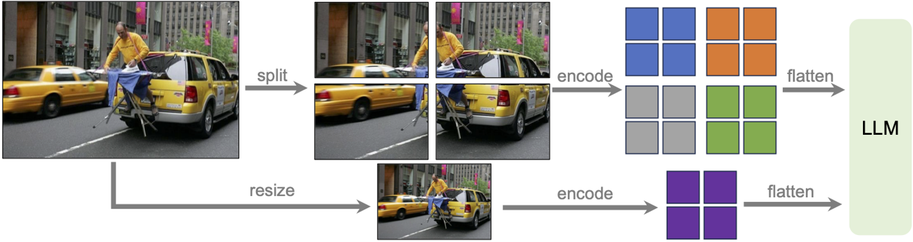
Token redundancy in VLMs: Vision tokens can reach up to 2880 tokens, creating massive inference bottlenecks. Our goal is to prune 95% of vision tokens while maintaining performance.
Prior methods are either uni-modal (language-only or vision-only) or based on simple ranking/diversity, while MMTok is both multimodal and maximum-coverage.
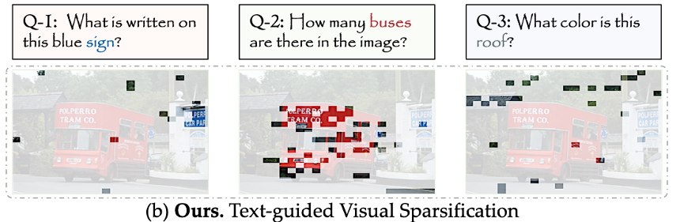
Language-only · Top-K
Ignores visual context.
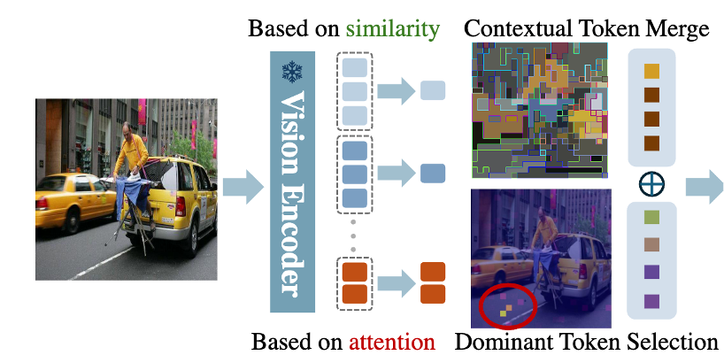
Vision-only · Top-K
Blind to text instructions.
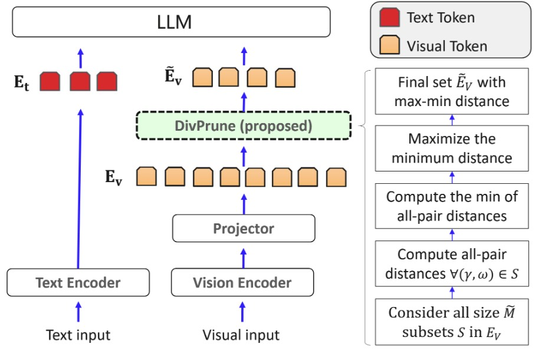
Vision-only · Diversity
Scatters tokens without semantics.
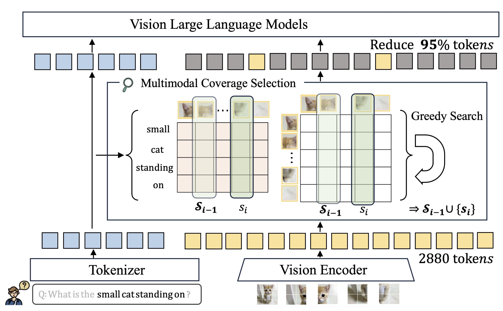
Multimodal · Coverage
Query-aware, balanced, and informative.
Coverage maximization ensures comprehensive, non-redundant token selection for better performance.
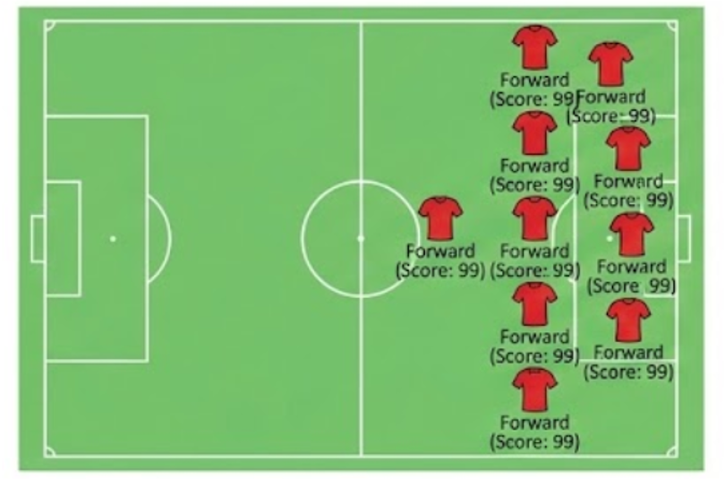
Evaluates tokens independently, leading to clustering in similar regions.
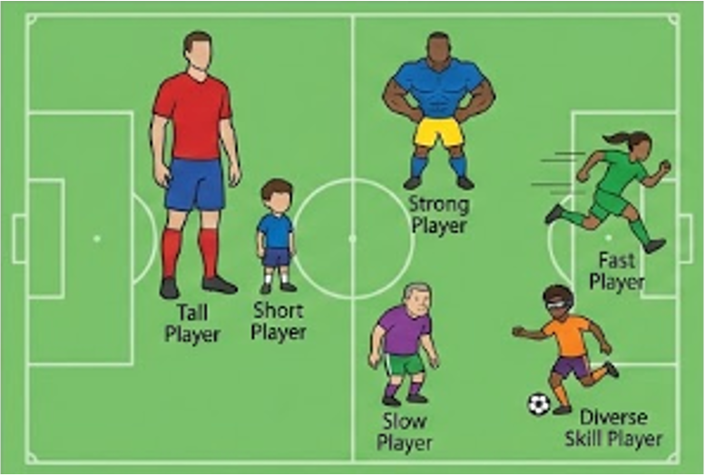
Focuses on intra-set diversity but sacrifices semantic relevance.
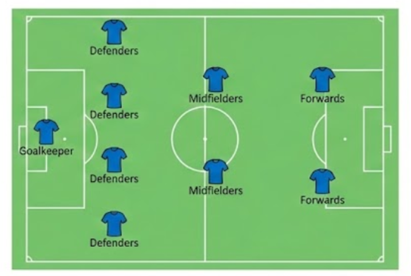
Optimizes inter-set similarity for comprehensive coverage.
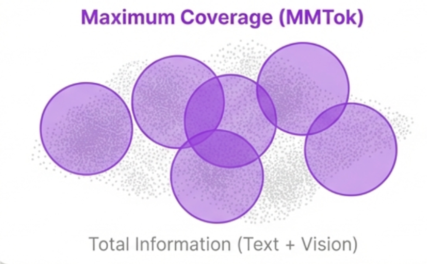
Multimodal Coverage: How MMTok’s maximum coverage objective captures the total information space (text + vision).
• Top-K (Simple Ranking): Evaluates tokens independently. This inevitably leads to severe token redundancy, as tokens cluster in highly similar regions (like clustering all forwards in soccer) and waste the token budget.
• Diversity-based: Focuses on maximizing differences within the selected subset (intra-set diversity). While it successfully scatters tokens visually, it often sacrifices semantic relevance to the actual query.
• Coverage Maximization (MMTok): Optimizes for collective coverage (inter-set similarity)—ensuring the selected subset comprehensively represents the entire original information space. By evaluating the marginal gain of each token, MMTok guarantees that every new patch brings strictly fresh information, perfectly balancing query relevance with global context.
A training-free solution that seamlessly integrates after vision encoder without modifying LLM structure
MMTok Framework: Training-free vision token pruning inserted after vision encoder, requiring no modifications to LLM internal structure
Step-by-step demonstration of MMTok's greedy selection algorithm
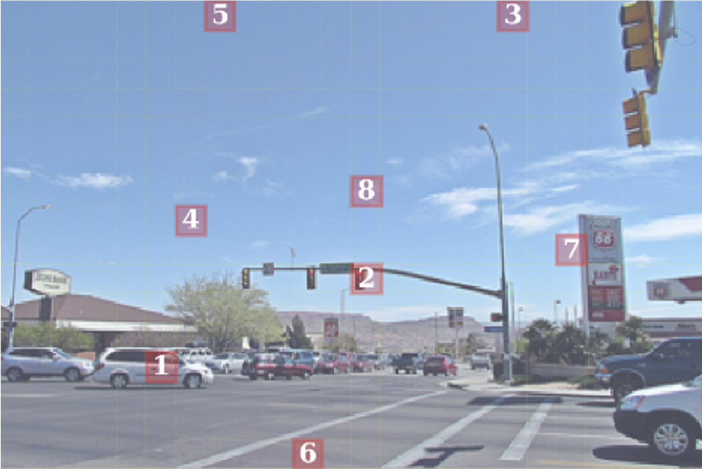
Q: Is there a traffic light in the image?
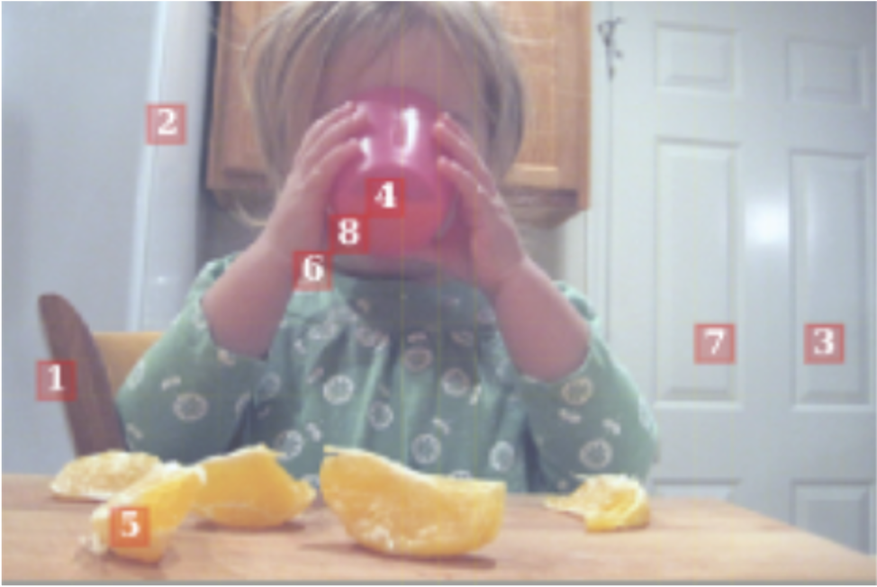
Q: Is there a chair in the image?
Demonstrating Algorithm Process: Unlike simple ranking methods that cluster tokens redundantly, MMTok optimizes for both text-vision and vision-vision similarity. As shown above, the greedy selection algorithm successfully identifies the specific target regions (e.g., traffic lights, chair) to answer the query, while simultaneously distributing remaining tokens to capture the broader scene context (e.g., street signs, the child, fruits). This ensures maximum semantic relevance without losing global visual information.
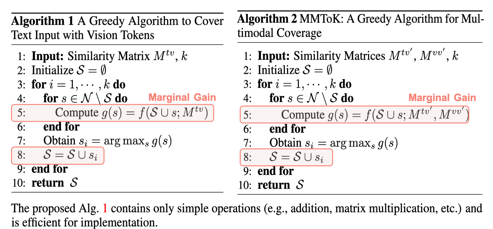
MMTok Algorithm: Efficient greedy selection with linear time complexity O(nk), where n is the number of vision tokens and k is the budget
Comprehensive comparison with existing methods
Performance comparison: MMTok results across multiple models and datasets
Effect of vision token count on multi-turn dialogue consistency
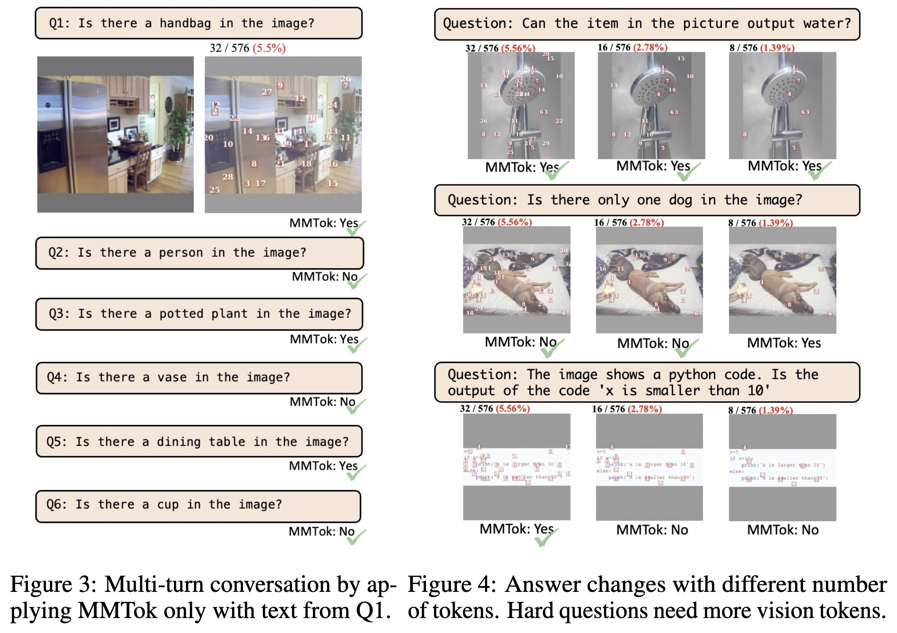
Multi-turn Conversation & Answer Drift with #Tokens: how the number of vision tokens affects answer consistency across dialogue turns
Comparison with DivPrune: MMTok maintains semantic relevance while diversity methods select visually diverse but semantically irrelevant patches
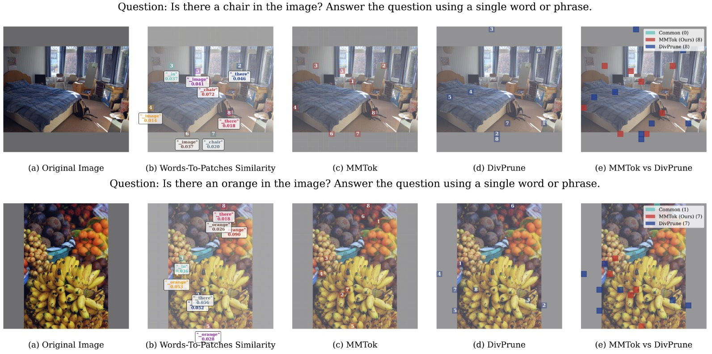
MMTok selects tokens relevant to the query while preserving important visual information, whereas DivPrune (diversity-based method) selects visually diverse patches without semantic relation to the query
From the visualization, we can observe that MMTok selects top patches according to the word-to-patch similarity, which aligns well with the question semantically. In contrast, DivPrune selected top patches without any close semantic relation to the question.
This further demonstrates that MMTok can help significantly reduce the number of tokens without losing the semantic relation to the questions, providing better performance compared to diversity-based methods.
@inproceedings{dong2026mmtok,
title={{MMT}ok: Multimodal Coverage Maximization for Efficient Inference of {VLM}s},
author={Sixun Dong and Juhua Hu and Mian Zhang and Ming Yin and Yanjie Fu and Qi Qian},
booktitle={The Fourteenth International Conference on Learning Representations},
year={2026},
url={https://openreview.net/forum?id=GvPdSWZT31}
}We thank Zoom Communications for providing internship opportunities and research support. We also appreciate the multimodal learning community for providing comprehensive benchmark datasets and baseline implementations.
Special thanks go to our collaborators for their constructive feedback and support. In particular, Yebowen Hu offered valuable discussions and feedback, while Kaiqiang Song contributed many insightful discussions, extensive assistance with computational resource scheduling, and helpful exchanges that enriched our learning. We also acknowledge the support from Zoomies.
This work was supported by Zoom Communications, including computational resources. We gratefully acknowledge the generous support provided.
Have questions about our method or want to discuss the results? We welcome all questions, discussions, and constructive feedback!
Found issues with our implementation or have suggestions for improvements? Please open an issue on our GitHub repository.
Interested in collaborating or extending this work? We're always open to new research partnerships and joint projects.
Contact us: sixundong.ai@gmail.com
GitHub Issues: MMTok Issues